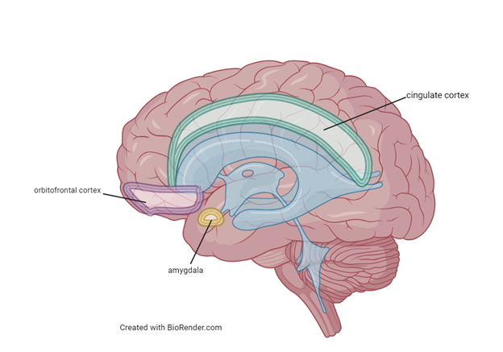
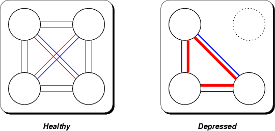
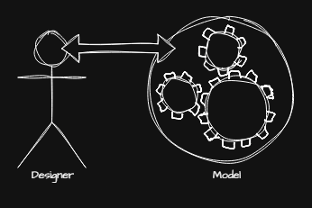
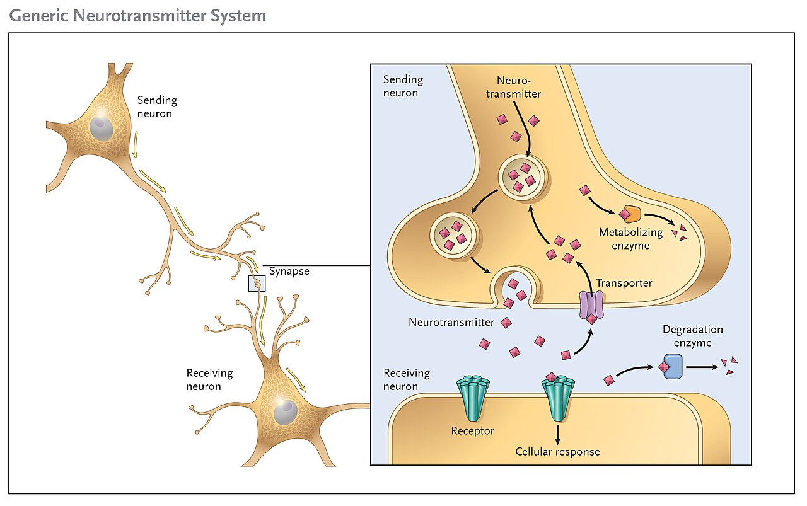

Psychological Disorders & Therapy
Roughly one in five adults will live through a diagnosable mental disorder this year, which means these conditions are not rare curiosities — they are among the most common experiences human beings have. This chapter asks a deceptively hard question first: what makes a thought, feeling, or behavior a disorder rather than simply unusual or inconvenient? From there it tours the major families of disorder — anxiety, obsessive-compulsive, and trauma-related conditions; the mood and psychotic disorders — and then turns to the good news: the treatments that work. You will meet the talking therapies that trace back to Freud, Rogers, and Beck, and the biomedical treatments that changed psychiatric care forever. Underneath all of it runs a single, well-supported idea — that mind and body, thought and chemistry, are two views of the same system.
By the end of this chapter you can
- Explain the criteria — dysfunction, distress, deviance, and danger — that separate a disorder from ordinary variation.
- Describe what the DSM is, what it does, and the limits of diagnostic labels.
- Distinguish the major anxiety disorders, OCD, and PTSD, and say why the DSM now files them in separate chapters.
- Contrast major depressive disorder, bipolar disorder, and schizophrenia and their leading explanations.
- Compare psychodynamic, humanistic, behavioral, and cognitive (CBT) approaches to psychotherapy.
- Summarize the main classes of psychiatric medication and what they target.
- Explain why the therapeutic alliance predicts outcomes across every kind of therapy.
- Apply the biopsychosocial model and diathesis-stress model to understand why disorders develop.
Section 1Defining disorders & the DSM
What makes behavior "disordered"
Almost every symptom of a psychological disorder is, in smaller doses, something everyone experiences. We all feel anxious before a test, low after a loss, or superstitious enough to knock on wood. So the line between a personality quirk and a clinical condition is drawn not by the presence of a feeling but by a cluster of judgments about that feeling. Clinicians often teach these as the four Ds: dysfunction (the behavior interferes with everyday life — work, relationships, self-care), distress (it causes the person real suffering), deviance (it departs markedly from cultural expectations), and danger (it poses a risk to the person or others). No single D is enough on its own — grief is distressing but healthy, and a firefighter's courage is deviant but admirable — which is why diagnosis weighs them together and always in context.
The single most important of these is dysfunction. The psychologist Jerome Wakefield captured it with the phrase harmful dysfunction: a disorder exists when some internal mechanism fails to do the job natural selection designed it for, and that failure causes harm the person or their society recognizes. Fear that saves you from a snake is working as designed; fear that pins you to your apartment for a decade is not. This framework keeps us from pathologizing mere difference: being unmarried, unconventional, or unpopular is not a disorder, however deviant a given culture may find it.
The DSM and how diagnosis works
To talk to one another, clinicians need a shared dictionary. In the United States that dictionary is the Diagnostic and Statistical Manual of Mental Disorders, or DSM, published by the American Psychiatric Association and now in its fifth edition, text revision (DSM-5-TR, 2022). For each disorder the DSM lists specific, checklist-style criteria — how many symptoms, for how long, causing how much impairment. The World Health Organization maintains a parallel system, the ICD, used for diagnosis worldwide. The DSM's great achievement is reliability: two clinicians examining the same patient are far more likely to agree on a diagnosis than they were in the 1970s. Its harder, unfinished problem is validity — whether the categories truly carve nature at its joints, or merely name clusters of symptoms that often blur together.
Labels are powerful, and power cuts both ways. A diagnosis can unlock treatment, insurance, and the relief of a name for one's suffering. But in David Rosenhan's famous 1973 study, On Being Sane in Insane Places, healthy volunteers who faked a single symptom to get admitted to psychiatric hospitals found the label "schizophrenia" stuck to everything they did — even normal note-taking was recorded as pathological. The lesson endures: a diagnosis describes a problem a person has, not the whole of who they are. Comorbidity — carrying more than one diagnosis at once — is the rule rather than the exception, another reminder that these categories are useful tools, not natural kinds.
| The four Ds | What it asks | Caution |
|---|---|---|
| Dysfunction | Does it impair work, relationships, or self-care? | The most important criterion; still requires context |
| Distress | Does it cause the person real suffering? | Some disorders (e.g., mania) feel good to the person |
| Deviance | Does it depart sharply from cultural norms? | Norms vary; difference alone is not disorder |
| Danger | Does it endanger the person or others? | Dramatic but actually uncommon in most disorders |
- The four Ds — dysfunction, distress, deviance, danger — are weighed together and in context; dysfunction matters most.
- A disorder is best seen as a harmful dysfunction, not mere difference from the crowd.
- The DSM (now DSM-5-TR) gives clinicians shared diagnostic criteria; the WHO's ICD is the global counterpart.
- The DSM has strong reliability but debated validity; labels help and harm, as Rosenhan's study showed.
Section 2Anxiety, OCD & trauma

Anxiety disorders
Fear and anxiety are close cousins that psychologists carefully separate. Fear is the alarm that fires in the face of a present threat — the surge that gets you out of the road. Anxiety is its future-tense form: apprehension about a threat that has not arrived and may never come. Both are adaptive in small measure; they become anxiety disorders when they are out of proportion, persistent, and disabling. As a family, they are the most common psychological disorders of all.
The family has several members. Generalized anxiety disorder is free-floating, hard-to-control worry about many things, most days, for months. Panic disorder features sudden panic attacks — racing heart, chest tightness, a sense of doom so physical that sufferers often believe they are having a heart attack — followed by dread of the next attack, which can spiral into agoraphobia, the avoidance of places escape would be hard. Specific phobias are intense, irrational fears of particular objects or situations (heights, spiders, needles), and social anxiety disorder is a paralyzing fear of being judged. Martin Seligman's idea of biological preparedness helps explain why phobias cluster around snakes, heights, and darkness — ancestral dangers — rather than around cars and electrical outlets, which harm far more people today.
OCD and trauma-related disorders
Earlier editions of the DSM grouped obsessive-compulsive disorder and post-traumatic stress disorder under "anxiety." DSM-5 pulled them into their own chapters, recognizing that although anxiety runs through both, their machinery is distinct. Obsessive-compulsive disorder (OCD) pairs obsessions — intrusive, unwanted thoughts, images, or urges (of contamination, harm, symmetry) — with compulsions, the repetitive acts (washing, checking, counting) performed to neutralize the dread the obsessions create. The compulsion brings a moment of relief that reinforces the whole cycle, which is why it tightens over time. Brain-imaging work implicates an overactive loop through the orbitofrontal cortex, striatum, and thalamus.
Post-traumatic stress disorder (PTSD) can follow exposure to actual or threatened death, serious injury, or violence — combat, assault, disaster. Its four symptom clusters are intrusion (flashbacks and nightmares that replay the event), avoidance of reminders, negative shifts in mood and thinking, and hyperarousal (being easily startled, always scanning for threat). Crucially, not everyone exposed to trauma develops PTSD; whether one does reflects the diathesis-stress model — a predisposing vulnerability (the diathesis) meeting a sufficient stressor.
| Disorder | DSM-5 chapter | Core feature |
|---|---|---|
| Generalized anxiety | Anxiety disorders | Chronic, uncontrollable, free-floating worry |
| Panic disorder | Anxiety disorders | Recurrent panic attacks & fear of the next |
| Specific phobia | Anxiety disorders | Intense, irrational fear of a specific trigger |
| OCD | Obsessive-compulsive & related | Obsessions (intrusive thoughts) + compulsions (rituals) |
| PTSD | Trauma- & stressor-related | Intrusion, avoidance, mood change, hyperarousal after trauma |
- Fear answers a present threat; anxiety anticipates a future one; disorders arise when the response is out of proportion and disabling.
- Anxiety disorders include generalized anxiety, panic disorder, phobias, and social anxiety — the most common category.
- OCD couples intrusive obsessions with relief-seeking compulsions; PTSD follows trauma with intrusion, avoidance, and hyperarousal.
- The diathesis-stress model explains why the same trauma disables one person and not another.
Section 3Mood & psychotic disorders

Depression and bipolar disorder
Everyone has bad days; major depressive disorder is something else. Its diagnosis requires at least two weeks of either a persistently depressed mood or anhedonia (the loss of pleasure in things once enjoyed), plus a cluster of other symptoms — changes in sleep and appetite, fatigue, worthlessness, trouble concentrating, and thoughts of death. It is roughly twice as common in women as in men, and it is a leading cause of disability worldwide. Bipolar disorder adds the opposite pole: episodes of mania — days of euphoric or irritable mood, racing thoughts, grandiosity, little need for sleep, and reckless spending or risk-taking — that alternate with depressive episodes. Bipolar I requires a full manic episode; bipolar II pairs depression with milder hypomania. Bipolar disorder is among the most heritable of psychiatric conditions.
Why do mood disorders happen? No single answer suffices, which is the point of the biopsychosocial model. Biologically, the classic monoamine hypothesis ties depression to low activity of serotonin, norepinephrine, and dopamine — though the truth is more complex than "a chemical imbalance." Psychologically, Aaron Beck described a negative cognitive triad: depressed people hold gloomy beliefs about themselves, the world, and the future, and interpret ambiguous events to confirm them. Martin Seligman's concept of learned helplessness — the giving-up that follows uncontrollable stress — and Susan Nolen-Hoeksema's work on rumination round out the picture. Because depression carries real suicide risk, taking expressions of hopelessness seriously is not optional.
Schizophrenia
Schizophrenia is a psychotic disorder — a break with shared reality — that typically emerges in late adolescence or early adulthood. Its positive symptoms (added experiences) include hallucinations, most often hearing voices, and delusions, fixed false beliefs held against all evidence, along with disorganized speech and behavior. Its negative symptoms (things taken away) include flat emotional expression, poverty of speech, and avolition, the collapse of motivation. A persistent myth deserves correcting: schizophrenia is not "split personality." The name refers to a splitting of thought from reality, not to multiple identities.
Schizophrenia is best understood through the diathesis-stress lens. Heritability is high — an identical twin of an affected person carries roughly a 50% risk — but genes are not destiny; that same figure means half of identical twins are discordant. The dopamine hypothesis arose because drugs that block dopamine reduce positive symptoms while drugs that boost it (like amphetamines) can induce psychosis. Prenatal complications, maternal infection, and heavy adolescent cannabis use raise risk in the biologically vulnerable, tipping a loaded gene toward an actual illness.
| Disorder | Hallmark | Leading explanation |
|---|---|---|
| Major depression | ≥2 weeks of low mood or anhedonia + symptoms | Monoamine, negative cognitive triad, learned helplessness |
| Bipolar disorder | Mania alternating with depression | Strongly genetic; disrupted mood regulation |
| Schizophrenia | Positive (hallucinations, delusions) & negative (flat affect) symptoms | Diathesis-stress; dopamine dysregulation |
- Major depression = ≥2 weeks of depressed mood or anhedonia plus other symptoms; twice as common in women.
- Bipolar disorder adds episodes of mania; it is highly heritable.
- Schizophrenia has positive (hallucinations, delusions) and negative (flat affect, avolition) symptoms — and is not "split personality."
- The biopsychosocial and diathesis-stress models beat any single-cause story.
Section 4Psychotherapy

Insight therapies: psychodynamic and humanistic
Psychotherapy — the treatment of psychological disorders through a structured relationship with a trained professional — comes in dozens of forms that sort into a few great traditions. The oldest is psychodynamic, descended from Sigmund Freud's psychoanalysis. Its premise is that today's symptoms grow from unconscious conflicts, often rooted in childhood, and that healing requires insight — making the unconscious conscious. Freud's tools were free association (saying whatever comes to mind, uncensored), dream analysis, and attention to transference, the patient's habit of projecting feelings about important figures onto the therapist. Classical analysis took years; modern psychodynamic therapy is briefer and more focused, but keeps the core belief that self-understanding heals.
The humanistic tradition, led by Carl Rogers, rejected Freud's dim view of human nature. Rogers's client-centered therapy (also called person-centered) assumes people have an innate drive toward growth that a warm relationship can release. The therapist supplies three conditions: unconditional positive regard (accepting the client without judgment), empathy (genuinely grasping their inner world, often through active listening and reflection), and genuineness or congruence. Abraham Maslow's idea of self-actualization supplied the movement's north star. Where the psychodynamic therapist interprets, the humanistic therapist mostly listens — and trusts the client to find their own way forward.
Action therapies: behavioral and cognitive
Behavioral therapy takes a different stance: a symptom is a learned behavior, so it can be unlearned, and there is no need to excavate the past. Drawing on Ivan Pavlov's classical conditioning, Joseph Wolpe developed systematic desensitization, in which a patient learns deep relaxation and then, step by step up a "fear hierarchy," pairs that calm with the very thing they dread — a counterconditioning that dissolves phobias. Exposure therapy generalizes the principle. Drawing instead on B. F. Skinner's operant conditioning, token economies reward desired behavior with tokens exchangeable for privileges, reshaping behavior through reinforcement.
The dominant modern approach is cognitive behavioral therapy (CBT), which fuses the behavioral tradition with the cognitive insight that our thoughts, not events themselves, drive our feelings. Aaron Beck's cognitive therapy teaches patients to catch and test the automatic distortions behind their distress — catastrophizing, all-or-nothing thinking, overgeneralizing. Albert Ellis's rational emotive behavior therapy (REBT) made the same point with his ABC model: it is not the Activating event but our irrational Beliefs about it that produce the emotional Consequence. CBT is time-limited, skill-focused, and homework-driven, and it has more evidence behind it than any other talk therapy for anxiety and depression.
| Approach | Founder(s) | Core idea | Signature technique |
|---|---|---|---|
| Psychodynamic | Freud | Symptoms spring from unconscious conflict | Free association, dream & transference analysis |
| Humanistic | Rogers, Maslow | People grow when accepted and understood | Unconditional positive regard, active listening |
| Behavioral | Wolpe, Skinner | Disorders are learned and can be unlearned | Systematic desensitization, token economy |
| Cognitive (CBT) | Beck, Ellis | Thoughts, not events, drive feelings | Challenging cognitive distortions; the ABC model |
- Psychodynamic therapy (Freud) seeks insight into unconscious conflict via free association, dreams, and transference.
- Humanistic therapy (Rogers) heals through unconditional positive regard, empathy, and genuineness.
- Behavioral therapy treats symptoms as learned behavior — systematic desensitization, exposure, token economies.
- CBT (Beck, Ellis) targets distorted thinking and is the best-supported talk therapy for anxiety and depression.
Section 5Biomedical therapy & the therapeutic relationship

Medications and other biomedical treatments
Biomedical therapy treats disorders by acting directly on the body, most often through psychotropic medication. Almost all of these drugs work at the synapse, tuning how neurotransmitters are released, received, or removed. Antidepressants are the largest class; the SSRIs (selective serotonin reuptake inhibitors) such as fluoxetine (Prozac) block the reabsorption of serotonin so it lingers in the synapse, and they treat depression and most anxiety disorders and OCD. Anti-anxiety drugs like the benzodiazepines calm the nervous system quickly but carry dependence risk. Antipsychotics reduce hallucinations and delusions mainly by blocking dopamine; first-generation agents (chlorpromazine, haloperidol) were revolutionary but caused movement side effects, and second-generation "atypicals" (clozapine, risperidone) broadened the effect. For bipolar disorder, the mood stabilizer lithium remains a mainstay decades after its discovery.
When medication and therapy both fail in severe, treatment-resistant depression, other biomedical options exist. Electroconvulsive therapy (ECT) — now delivered under anesthesia and far gentler than its grim reputation — is strikingly effective for the sickest patients. Newer, less invasive tools like transcranial magnetic stimulation (TMS) stimulate targeted brain regions without seizures or anesthesia. These treatments are powerful, and they are also blunt, which is why they sit at the end of the line rather than the front.
The therapeutic relationship
Here is one of the most robust findings in all of clinical psychology: across wildly different schools of therapy, outcomes are far more similar than their competing theories would predict. In Mary Lee Smith and Gene Glass's landmark meta-analysis, the average treated person did better than about 80% of the untreated — but no single approach clearly beat the rest, a pattern nicknamed the dodo bird verdict ("everyone has won, and all must have prizes"). If technique explains less than expected, what explains the results? A large share is the therapeutic alliance — the bond of trust, warmth, and shared goals between client and therapist. It is one of the strongest predictors of improvement in every modality, which is why Rogers's emphasis on the relationship turned out to be prophetic even for therapists who reject his theory.
Two closing ideas follow. First, most working clinicians are eclectic or integrative: they borrow whatever tool fits the patient rather than pledging loyalty to one school. Second, the strongest evidence favors combined treatment — medication to steady the biology while therapy rebuilds thoughts and habits — a direct expression of the biopsychosocial model that opened this chapter. Mind and body are not two patients. They are one, and the best care treats them together.
| Drug class | Example | Chiefly treats | Acts on |
|---|---|---|---|
| SSRI antidepressant | Fluoxetine (Prozac) | Depression, anxiety, OCD | Serotonin reuptake |
| Anti-anxiety | Benzodiazepines | Acute anxiety | GABA (calms neural firing) |
| Antipsychotic | Haloperidol; clozapine | Schizophrenia, psychosis | Dopamine (mainly) |
| Mood stabilizer | Lithium | Bipolar disorder | Multiple; stabilizes mood swings |
- Biomedical therapy acts on the body; most psychotropic drugs work at the synapse.
- SSRIs treat depression, anxiety, and OCD; antipsychotics target dopamine; lithium stabilizes bipolar disorder.
- ECT and TMS are options for severe, treatment-resistant depression.
- The therapeutic alliance predicts outcomes across all approaches; combined and eclectic treatment usually works best.
The chapter in one breath
- A behavior becomes a disorder through the four Ds — dysfunction, distress, deviance, danger — weighed together, with dysfunction foremost.
- The DSM gives clinicians shared, reliable diagnostic criteria, but labels have limits, as Rosenhan showed, and comorbidity is common.
- Anxiety disorders (generalized, panic, phobias, social) are the most common; OCD and PTSD now sit in their own DSM chapters.
- Major depression and bipolar disorder are mood disorders; schizophrenia is a psychotic disorder with positive and negative symptoms — not "split personality."
- The diathesis-stress and biopsychosocial models explain disorders as vulnerability meeting stress across biology, mind, and environment.
- Talk therapies divide into psychodynamic (Freud), humanistic (Rogers), behavioral (Wolpe, Skinner), and cognitive/CBT (Beck, Ellis).
- Biomedical therapy — SSRIs, antipsychotics, lithium, ECT — works at the level of the brain; the therapeutic alliance predicts success everywhere.
- The best outcomes usually come from combined, eclectic care that treats mind and body as one system.
ReferenceWords worth knowing
A quick reference for the terms in this chapter — skim it now, or circle back whenever a word trips you up.
- Anhedonia
- The loss of interest or pleasure in activities once enjoyed; a core symptom of major depression.
- Antipsychotic
- A medication that reduces hallucinations and delusions, mainly by blocking dopamine.
- Bipolar disorder
- A mood disorder in which episodes of mania alternate with episodes of depression.
- Cognitive behavioral therapy (CBT)
- An action therapy that fuses behavioral techniques with the correction of distorted thinking; the best-supported talk therapy for anxiety and depression.
- Comorbidity
- The presence of two or more disorders in the same person at the same time.
- Compulsion
- A repetitive behavior or mental act performed to reduce the anxiety caused by an obsession.
- Delusion
- A fixed false belief held despite clear contradicting evidence; a positive symptom of schizophrenia.
- Diathesis-stress model
- The view that a disorder emerges when a predisposing vulnerability (diathesis) meets sufficient stress.
- DSM
- The Diagnostic and Statistical Manual of Mental Disorders, the standard U.S. classification system; currently DSM-5-TR.
- Hallucination
- A sensory experience without an external stimulus, such as hearing voices; a positive symptom of schizophrenia.
- Humanistic therapy
- An insight therapy (Rogers) that promotes growth through unconditional positive regard, empathy, and genuineness.
- Major depressive disorder
- At least two weeks of depressed mood or anhedonia plus additional symptoms that impair functioning.
- Mania
- A period of abnormally elevated or irritable mood with racing thoughts, grandiosity, and reduced need for sleep.
- Obsession
- An intrusive, unwanted, recurring thought, image, or urge that causes marked distress.
- Obsessive-compulsive disorder (OCD)
- A disorder pairing obsessions with the compulsions performed to relieve them.
- Post-traumatic stress disorder (PTSD)
- A trauma-related disorder marked by intrusion, avoidance, negative mood shifts, and hyperarousal after a traumatic event.
- Psychoanalysis
- Freud's psychodynamic therapy aimed at insight into unconscious conflict through free association and dream and transference analysis.
- Schizophrenia
- A psychotic disorder with positive symptoms (hallucinations, delusions) and negative symptoms (flat affect, avolition).
- SSRI
- A selective serotonin reuptake inhibitor (e.g., fluoxetine) that raises synaptic serotonin to treat depression, anxiety, and OCD.
- Systematic desensitization
- A behavioral technique that pairs relaxation with a graded fear hierarchy to unlearn a phobia.
- Therapeutic alliance
- The bond of trust and shared goals between client and therapist; a strong predictor of outcome across all therapies.
- Unconditional positive regard
- Rogers's stance of accepting and valuing a client without judgment, regardless of what they say or do.